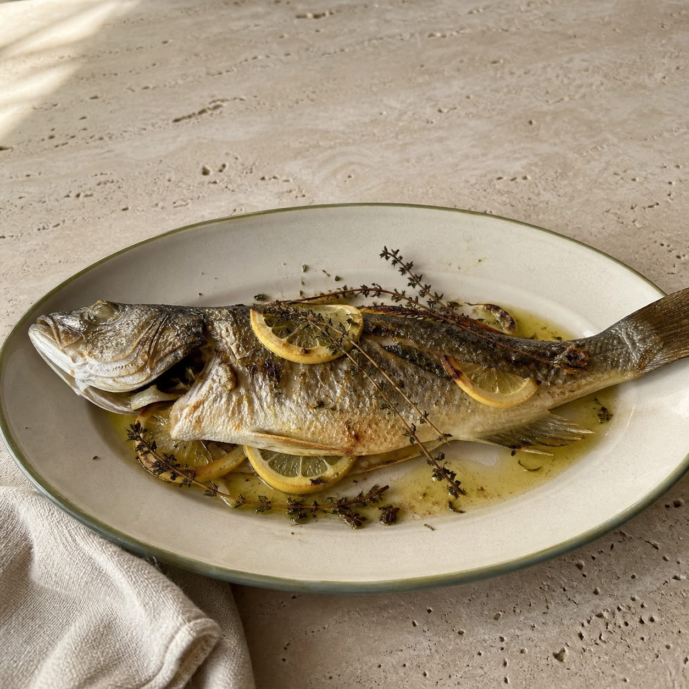

Bu Tarifin Yağı
Trilye Erken Hasat · Bitirme
Balığı Olgun Hasat ile pişir; Trilye'yi aroması kaybolmasın diye fırından sonra ekle.

Olgun Hasat fırında yemeği taşır; karakterli Trilye ise sıcak balığın üzerinde, servisten hemen önce açılır.
40 dk · 2 kişilik

Balığı Olgun Hasat ile pişir; Trilye'yi aroması kaybolmasın diye fırından sonra ekle.